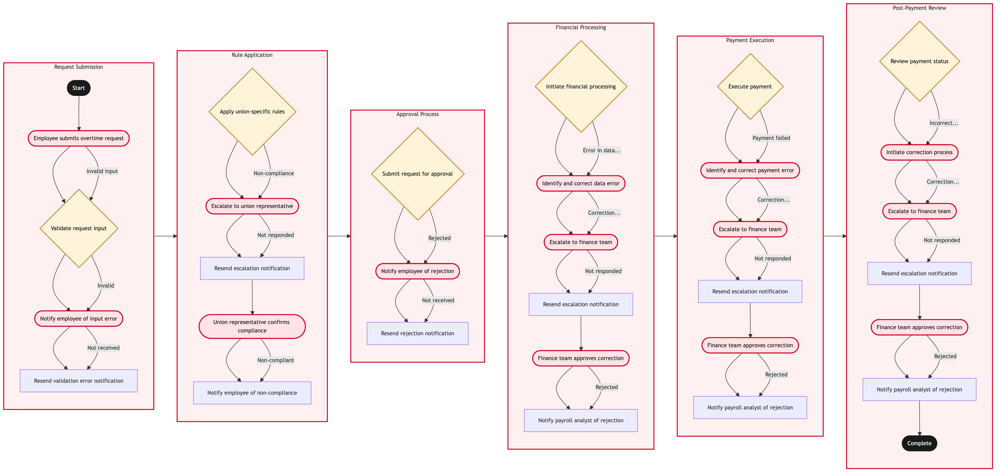

Updated 2026-08-21
Overtime and Premium Pay Control
Process flow
Click to zoom

Process steps
▼
Phase 1 — Request Submission
4 steps
| Step | Activity | Role | System | Input | Output | KPI | Dec | Exc | Pain point |
|---|---|---|---|---|---|---|---|---|---|
| 1.1 | Employee submits overtime request | Crew Member | DayforceB | Overtime hours worked | Request record in Dayforce | 95% submission accuracy within 24 hours | N | Y | Manual data entry errors can lead to delays. |
| 1.2 | Validate request input | HR Analyst | DayforceB | Request record | Validation report | 98% validation accuracy within 30 minutes | Y | N | Complex union rules require meticulous verification. |
| 1.3 | Notify employee of input error | HR Analyst | Microsoft 365C | Validation report | Error notification email | 90% response rate within 2 hours | N | Y | Employee communication delays can lead to frustration. |
| 1.4 | Resend validation error notification | HR Analyst | Microsoft 365C | Error report | Re-sent email | 80% successful resend rate within 2 hours | N | N | Email system downtime can affect communication. |
▼
Phase 2 — Rule Application
5 steps
| Step | Activity | Role | System | Input | Output | KPI | Dec | Exc | Pain point |
|---|---|---|---|---|---|---|---|---|---|
| 2.1 | Apply union-specific rules | HR Analyst | DayforceB | Valid request record | Rule application report | 95% rule accuracy within 30 minutes | Y | N | Union rules vary significantly, increasing complexity. |
| 2.2 | Escalate to union representative | HR Analyst | Microsoft 365C | Rule application report | Escalation email | 85% response rate within 1 hour | N | Y | Union delays can stall processing. |
| 2.3 | Resend escalation notification | HR Analyst | Microsoft 365C | Escalation email | Re-sent email | 70% successful resend rate within 1 hour | N | N | Email system downtime can affect communication. |
| 2.4 | Union representative confirms compliance | Union Representative | DayforceB | Escalation email | Compliance confirmation | 90% response rate within 1 hour | N | Y | Union delays can stall processing. |
| 2.5 | Notify employee of non-compliance | HR Analyst | Microsoft 365C | Compliance confirmation | Notification email | 80% response rate within 1 hour | N | N | Employee communication delays can lead to frustration. |
▼
Phase 3 — Approval Process
3 steps
| Step | Activity | Role | System | Input | Output | KPI | Dec | Exc | Pain point |
|---|---|---|---|---|---|---|---|---|---|
| 3.1 | Submit request for approval | HR Analyst | DayforceB | Rule application report | Approval request in Dayforce | 95% submission accuracy within 2 hours | Y | N | Manual data entry errors can lead to delays. |
| 3.2 | Notify employee of rejection | HR Analyst | Microsoft 365C | Approval request | Rejection email | 90% response rate within 1 hour | N | Y | Employee communication delays can lead to frustration. |
| 3.3 | Resend rejection notification | HR Analyst | Microsoft 365C | Rejection email | Re-sent email | 80% successful resend rate within 1 hour | N | N | Email system downtime can affect communication. |
▼
Phase 4 — Financial Processing
6 steps
| Step | Activity | Role | System | Input | Output | KPI | Dec | Exc | Pain point |
|---|---|---|---|---|---|---|---|---|---|
| 4.1 | Initiate financial processing | Payroll Analyst | DayforceB | Approved request | Financial transaction record | 98% accuracy within 2 hours | Y | N | Data transfer errors between Dayforce and SAP S/4HANA can cause delays. |
| 4.2 | Identify and correct data error | Payroll Analyst | DayforceB | Error report | Corrected financial transaction record | 85% correction rate within 1 hour | N | Y | Manual corrections can be time-consuming. |
| 4.3 | Escalate to finance team | Payroll Analyst | Microsoft 365C | Error report | Escalation email | 80% response rate within 1 hour | N | Y | Finance team delays can stall processing. |
| 4.4 | Resend escalation notification | Payroll Analyst | Microsoft 365C | Escalation email | Re-sent email | 70% successful resend rate within 1 hour | N | N | Email system downtime can affect communication. |
| 4.5 | Finance team approves correction | Finance Team Lead | SAP S/4HANAA | Escalation email | Approval response | 90% approval rate within 1 hour | N | Y | Finance delays can stall processing. |
| 4.6 | Notify payroll analyst of rejection | Payroll Analyst | Microsoft 365C | Approval response | Rejection email | 80% response rate within 1 hour | N | N | Communication delays can lead to frustration. |
▼
Phase 5 — Payment Execution
6 steps
| Step | Activity | Role | System | Input | Output | KPI | Dec | Exc | Pain point |
|---|---|---|---|---|---|---|---|---|---|
| 5.1 | Execute payment | Payroll Analyst | SAP S/4HANAA | Corrected financial transaction record | Payment processed | 98% success rate within 2 hours | Y | N | Payment system downtime can cause delays. |
| 5.2 | Identify and correct payment error | Payroll Analyst | SAP S/4HANAA | Error report | Corrected payment record | 85% correction rate within 1 hour | N | Y | Manual corrections can be time-consuming. |
| 5.3 | Escalate to finance team | Payroll Analyst | Microsoft 365C | Error report | Escalation email | 80% response rate within 1 hour | N | Y | Finance team delays can stall processing. |
| 5.4 | Resend escalation notification | Payroll Analyst | Microsoft 365C | Escalation email | Re-sent email | 70% successful resend rate within 1 hour | N | N | Email system downtime can affect communication. |
| 5.5 | Finance team approves correction | Finance Team Lead | SAP S/4HANAA | Escalation email | Approval response | 90% approval rate within 1 hour | N | Y | Finance delays can stall processing. |
| 5.6 | Notify payroll analyst of rejection | Payroll Analyst | Microsoft 365C | Approval response | Rejection email | 80% response rate within 1 hour | N | N | Communication delays can lead to frustration. |
▼
Phase 6 — Post-Payment Review
6 steps
| Step | Activity | Role | System | Input | Output | KPI | Dec | Exc | Pain point |
|---|---|---|---|---|---|---|---|---|---|
| 6.1 | Review payment status | Payroll Analyst | SAP S/4HANAA | Payment processed record | Payment review report | 95% accuracy within 2 hours | Y | N | Manual data verification can lead to delays. |
| 6.2 | Initiate correction process | Payroll Analyst | SAP S/4HANAA | Payment review report | Correction request | 85% accuracy within 1 hour | N | Y | Manual corrections can be time-consuming. |
| 6.3 | Escalate to finance team | Payroll Analyst | Microsoft 365C | Correction request | Escalation email | 80% response rate within 1 hour | N | Y | Finance team delays can stall processing. |
| 6.4 | Resend escalation notification | Payroll Analyst | Microsoft 365C | Escalation email | Re-sent email | 70% successful resend rate within 1 hour | N | N | Email system downtime can affect communication. |
| 6.5 | Finance team approves correction | Finance Team Lead | SAP S/4HANAA | Escalation email | Approval response | 90% approval rate within 1 hour | N | Y | Finance delays can stall processing. |
| 6.6 | Notify payroll analyst of rejection | Payroll Analyst | Microsoft 365C | Approval response | Rejection email | 80% response rate within 1 hour | N | N | Communication delays can lead to frustration. |
Swim lanes
Crew Member1.1
HR Analyst1.2 1.3 1.4 2.1 2.2 2.3 2.5 3.1 3.2 3.3
Union Representative2.4
Payroll Analyst4.1 4.2 4.3 4.4 4.6 5.1 5.2 5.3 5.4 5.6 6.1 6.2 6.3 6.4 6.6
Finance Team Lead4.5 5.5 6.5
Systems touched
DayforceBMicrosoft 365CSAP S/4HANAA
Key performance indicators
- 95% request submission accuracy within 24 hours
- 98% rule application accuracy within 30 minutes
- 95% approval submission accuracy within 2 hours
- 98% financial processing success rate within 2 hours
- 98% payment execution success rate within 2 hours
Risks and control points
- Data entry errors leading to request delays
- Complex union rules causing misapplication
- Email system downtime affecting communication
- Data transfer errors between systems
- Finance team delays impacting critical processing steps
Air Canada Process Wiki — process and systems reference compiled from public sources
for IT Application Management and User Support pre-sales discovery.
Built 2026-08-21. Every system carries an evidence tier: tier C is an industry pattern and tier U is an open
question, and neither should be asserted as fact about Air Canada without confirmation in discovery.
Not affiliated with or endorsed by Air Canada. Air Canada, Aeroplan and Altitude are trademarks of Air Canada.